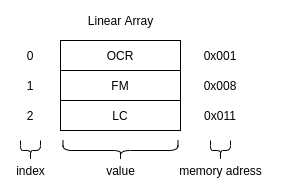

Quan Nguyen
cd~ / about / tags / poem / rss
Bitmark hay này
Là lá la là la
Thật sự thì hồi đi học cũng học nhiều mấy thứ liên quan đến bit, cơ mà cho để nay thì chữ thầy chắc em gửi lại
thầy rồi  . Cho đến một ngày…
vô tình đọc được một bài viết của bác @MikiTebeka
Nên em sợ bác xóa bài cho nên em xin phép
. Cho đến một ngày…
vô tình đọc được một bài viết của bác @MikiTebeka
Nên em sợ bác xóa bài cho nên em xin phép make a note một vài thứ về Bitmark
Tự giải thích một vài khái niệm
Nói về bit, ở đây được hiểu là một khái niệm thuộc về máy tính, máy tính hiểu được chúng ta là do nó đã translate sang
ngôn ngữ của bản thân nó bit, và dị lắm, mỗi bit thì mang một trong 2 giá trị 0 hoặc 1.
Và mỗi vị trí bit thực hiện một lũy thừa của 2
bit | 2⁷| 2⁶| 2⁵| 2⁴| 2³| 2²| 2¹| 2⁰|
base 10 |128| 64| 32| 16| 8 | 4 | 2 | 1 |
Ví dụ về số thập phân đi, để đại điện số 14, thì các vị trí bít được set là 8, 4, 2
bit | 0 | 0 | 0 | 0 | 1 | 1 | 1 | 0 |
base 10 |128| 64| 32| 16| 8 | 4 | 2 | 1 |
0 + 0 + 0 + 0 + 8 + 4 + 2 + 0 = 14
Lưu ý rằng, scheme ở trên có nghĩa là số tối đa có thể được biểu thị bằng một byte là 255, nó có nghĩa là tất cả các bit
vị trí sẽ được điền bởi 1 và tổng của tất cả cơ số 10.
Các phép toán logic
Có một số thứ kiến các developer trở thành các nhà ảo thuật  đấy là các pháp toán trên bit:
đấy là các pháp toán trên bit: AND, OR, NOT, SHIFT LEFT,…
Lướt qua một số phép toán:
| A | B | A&B | A|B | ^A |
| 0 | 0 | 0 | 0 | 1 |
| 0 | 1 | 0 | 1 | 1 |
| 1 | 0 | 0 | 1 | 0 |
| 1 | 1 | 1 | 1 | 0 |
SHIFT LEFT << dịch các bit hiện tại sang bên trái 1 đơn vị.
00000011 (3) << 1
00000110 (6)
Như bên trên, SHIFT LEFT có nghĩa nhân số hiện tại với 2¹
do đó công thức là A << n = A * (2^n)
Tương tự như SHIFT LEFT, SHIFT RIGHT(>>) sẽ dịch các bít hiện tại sang phải 1 đơn vị,
và công thức là, A >> n = A / (2^n)
00000110 (6) >> 1
00000011 (3)
Đi sâu hơn chút
Để tính toán bit nào là chung giữa các số 5 AND 3:
00000001 AND (4, 1)
00000011 (2, 1)
--------------------
00000001 (1)
Để join bit chung giữa 5 OR 3:
00000101 OR (4, 1)
00000011 (2, 1)
-------------------
00000111 (4, 2, 1)
Phần hay nhất xin anh em đọc ở vài viết của bác @MikiTebeka
So sánh một chút về chi phí bộ nhớ
Làm một phép so sánh nhỏ khi dùng []string và bitmark về chi phí bộ nhớ.
Giả định là cả 2 đều phải lưu 3 giá trị OCR, FM, LC.
Dĩ nhiên rồi array được đại diện bởi []string{"OCR", "FM", "LC"}. Thật dễ để thấy anh em cần 3 chi phí để lưu các giá trị này
tức (O(n) memory space).

Đối với bitmark thì là 00000111 cơ số 2, hay 7 cho cơ số 10 10, do đó chi phí là 1 (O(1) memory space).
Pros and Cons
Pros
Ngầu chứ
Tối ưu về bộ nhớ
Phù hợp với các bài toán thu thập,…
Cons
- Khó hiểu và khó maintain
Cuối cùng thì…!
Bitmark hay đấy, nhưng mới áp dụng được có 1 lần 
Happy coding :v !
Copyright © 2021- 🚀 Quan Nguyen